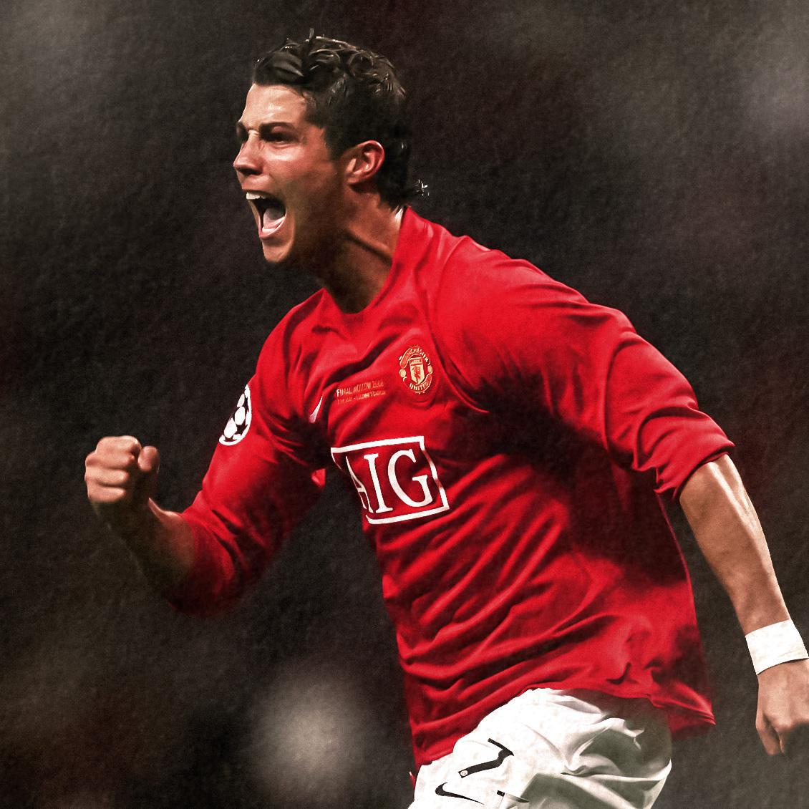

Cristiano Ronaldo (born February 5, 1985, Funchal, Madeira, Portugal) is a Portuguese football (soccer) forward who is one of the greatest players of his generation. Ronaldo is the winner of five Ballon d’Or awards (2008, 2013, 2014, 2016, and 2017), and in 2024 he became the first men’s player to score 900 career goals in official matches.